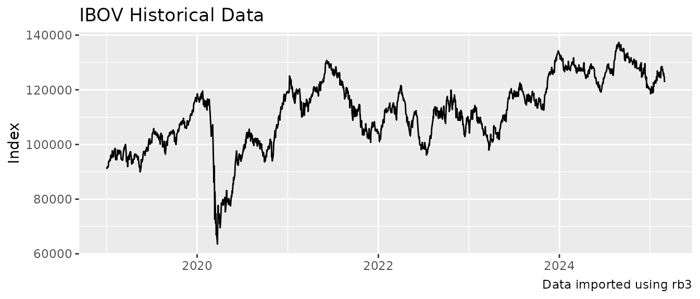
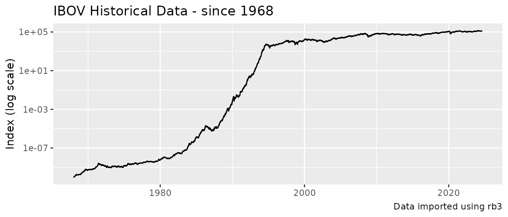
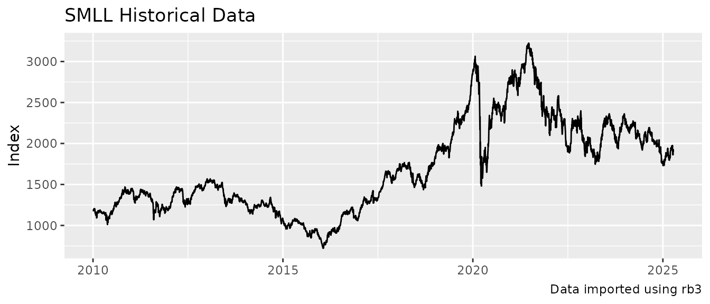

rb3 comes with a diverse range of functions to explore
the index delivered by the B3 Exchange. These functions will be
presented here.
The function rb3::indexes_get list the names of
available indexes.
#> [1] "AGFS" "BDRX" "GPTW" "IBBR" "IBEE" "IBEP" "IBEW" "IBHB" "IBLV" "IBOV"
#> [11] "IBRA" "IBSD" "IBXL" "IBXX" "ICO2" "ICON" "IDIV" "IDVR" "IEEX" "IFIL"
#> [21] "IFIX" "IFNC" "IGCT" "IGCX" "IGNM" "IMAT" "IMOB" "INDX" "ISEE" "ITAG"
#> [31] "IVBX" "MLCX" "SMLL" "UTIL"The composition of B3 indexes are available through the function
rb3::index_weights_get. This function returns a data.frame
with the current compostion of the requested index, all symbols that
compound the index, their weights and theoretical position. Here the
IBOVESPA (IBOV) Index has its composition listed.
index_weights_get("IBOV")#> # A tibble: 87 × 3
#> symbol weight position
#> <chr> <dbl> <dbl>
#> 1 ABEV3 0.0258 4394835131
#> 2 ALOS3 0.00442 476976044
#> 3 AMOB3 0.00009 533959816
#> 4 ASAI3 0.00378 1345832968
#> 5 AURE3 0.00141 323738747
#> 6 AZUL4 0.00064 326872005
#> 7 AZZA3 0.00205 136643320
#> 8 B3SA3 0.0282 5392540963
#> 9 BBAS3 0.0350 2842613858
#> 10 BBDC3 0.00794 1484426957
#> # ℹ 77 more rowsThe IBr100 Index (IBXX)
index_weights_get("IBXX")#> # A tibble: 101 × 3
#> symbol weight position
#> <chr> <dbl> <dbl>
#> 1 ABEV3 0.0244 4394835131
#> 2 ALOS3 0.00419 476976044
#> 3 ALPA4 0.00052 164391149
#> 4 AMBP3 0.00219 37603389
#> 5 AMOB3 0.00009 533959816
#> 6 ASAI3 0.00358 1345832968
#> 7 AURE3 0.00134 323738747
#> 8 AZUL4 0.0006 326872005
#> 9 AZZA3 0.00194 136643320
#> 10 B3SA3 0.0267 5392540963
#> # ℹ 91 more rowsThe Small Caps Index (SMLL)
index_weights_get("SMLL")#> # A tibble: 120 × 3
#> symbol weight position
#> <chr> <dbl> <dbl>
#> 1 ABCB4 0.0055 72905159
#> 2 AGRO3 0.0056 63480488
#> 3 ALOS3 0.0338 476976044
#> 4 ALPA4 0.00418 164391149
#> 5 ALUP11 0.0158 151478409
#> 6 AMOB3 0.0007 533959816
#> 7 ANIM3 0.00156 257302285
#> 8 ARML3 0.00357 171598756
#> 9 ASAI3 0.0290 1345832968
#> 10 AURE3 0.0108 323738747
#> # ℹ 110 more rowsrb3::index_comp_get returns a vector with symbols that
compound the given index.
index_comp_get("SMLL")#> [1] "ABCB4" "AGRO3" "ALOS3" "ALPA4" "ALUP11" "AMOB3" "ANIM3" "ARML3"
#> [9] "ASAI3" "AURE3" "AZEV4" "AZUL4" "AZZA3" "BEEF3" "BHIA3" "BLAU3"
#> [17] "BMOB3" "BPAN4" "BRAP4" "BRAV3" "BRBI11" "BRKM5" "BRSR6" "CAML3"
#> [25] "CASH3" "CBAV3" "CEAB3" "CLSA3" "COGN3" "CRFB3" "CSMG3" "CSNA3"
#> [33] "CURY3" "CVCB3" "CYRE3" "DASA3" "DIRR3" "DXCO3" "ECOR3" "EVEN3"
#> [41] "EZTC3" "FESA4" "FLRY3" "FRAS3" "GFSA3" "GGPS3" "GOAU4" "GRND3"
#> [49] "GUAR3" "HBSA3" "HYPE3" "IGTI11" "INTB3" "IRBR3" "JALL3" "JHSF3"
#> [57] "JSLG3" "KEPL3" "LAVV3" "LEVE3" "LJQQ3" "LOGG3" "LWSA3" "MDIA3"
#> [65] "MDNE3" "MGLU3" "MILS3" "MLAS3" "MOVI3" "MRFG3" "MRVE3" "MTRE3"
#> [73] "MULT3" "MYPK3" "ODPV3" "ONCO3" "OPCT3" "ORVR3" "PCAR3" "PETZ3"
#> [81] "PGMN3" "PLPL3" "PNVL3" "POMO4" "PORT3" "POSI3" "PRNR3" "QUAL3"
#> [89] "RANI3" "RAPT4" "RCSL3" "RCSL4" "RECV3" "SAPR11" "SBFG3" "SEER3"
#> [97] "SIMH3" "SLCE3" "SMFT3" "SMTO3" "SOJA3" "SRNA3" "STBP3" "SYNE3"
#> [105] "TAEE11" "TASA4" "TEND3" "TGMA3" "TTEN3" "TUPY3" "UNIP6" "USIM3"
#> [113] "USIM5" "VAMO3" "VIVA3" "VLID3" "VULC3" "VVEO3" "YDUQ3" "ZAMP3"rb3::index_by_segment_get returns a data.frame with all
stocks that are in the index, their economic segment, weights, position
and segment weight in the index.
index_by_segment_get("IBOV")#> # A tibble: 87 × 6
#> symbol segment weight segment_weight position refdate
#> <chr> <chr> <dbl> <dbl> <dbl> <date>
#> 1 WEGE3 Bens Indls / Máqs e Equips 0.0274 0.0274 1.24e9 2025-04-14
#> 2 EMBR3 Bens Indls / Mat Transporte 0.0218 0.0237 7.35e8 2025-04-14
#> 3 POMO4 Bens Indls / Mat Transporte 0.00196 0.0237 6.66e8 2025-04-14
#> 4 AZUL4 Bens Indls/Transporte 0.00048 0.0223 3.27e8 2025-04-14
#> 5 CCRO3 Bens Indls/Transporte 0.00567 0.0223 9.92e8 2025-04-14
#> 6 RAIL3 Bens Indls/Transporte 0.0106 0.0223 1.22e9 2025-04-14
#> 7 STBP3 Bens Indls/Transporte 0.00557 0.0223 8.56e8 2025-04-14
#> 8 BRFS3 Cons N Básico / Alimentos… 0.00817 0.0364 8.15e8 2025-04-14
#> 9 JBSS3 Cons N Básico / Alimentos… 0.0231 0.0364 1.15e9 2025-04-14
#> 10 MRFG3 Cons N Básico / Alimentos… 0.00297 0.0364 3.02e8 2025-04-14
#> # ℹ 77 more rowsrb3 downloads data from B3 website to build time series
for B3 indexes.
The function rb3::index_get downloads data from B3 for
the given index name and returns data structured in a data.frame. The
index names are obtained with rb3::indexes_get
function.
head(index_data)
#> refdate index_name value
#> 1 2019-01-02 IBOV 91012.32
#> 2 2019-01-03 IBOV 91564.26
#> 3 2019-01-04 IBOV 91840.80
#> 4 2019-01-07 IBOV 91699.05
#> 5 2019-01-08 IBOV 92031.86
#> 6 2019-01-09 IBOV 93613.05The returned data.frame has three columns: refdate,
index_name and value.
index_data |>
ggplot(aes(x = refdate, y = value)) +
geom_line() +
labs(
x = NULL, y = "Index",
title = str_glue("{index_name} Historical Data"),
caption = str_glue("Data imported using rb3")
)
The IBOVESPA index starts at 1968 and the series is adjusted for all economic events the that affected the Brazilian currency in the 80-90’s decades.
index_data <- index_get(index_name, as.Date("1968-01-01"))
index_data |>
ggplot(aes(x = refdate, y = value)) +
geom_line() +
scale_y_log10() +
labs(
x = NULL, y = "Index (log scale)",
title = str_glue("{index_name} Historical Data - since 1968"),
caption = str_glue("Data imported using rb3")
)
The y-axis was transformed to log scale in order to get the visualization improved.
Change index_name to get data for other indexes, for
example, the Small Caps Index SMLL.
index_data |>
ggplot(aes(x = refdate, y = value)) +
geom_line() +
labs(
x = NULL, y = "Index",
title = str_glue("{index_name} Historical Data"),
caption = str_glue("Data imported using rb3")
)
rb3::indexes_last_update returns the date where the
indexes have been last updated.